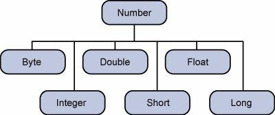

Java - Numbers Class
Advertisements
Normally, when we work with Numbers, we use primitive data types such as byte, int, long, double, etc.
Example
int i = 5000;
float gpa = 13.65;
double mask = 0xaf;
However, in development, we come across situations where we need to use objects instead of primitive data types. In order to achieve this, Java provides wrapper classes.
All the wrapper classes (Integer, Long, Byte, Double, Float, Short) are subclasses of the abstract class Number.
The object of the wrapper class contains or wraps its respective primitive data type. Converting primitive data types into object is called boxing, and this is taken care by the compiler. Therefore, while using a wrapper class you just need to pass the value of the primitive data type to the constructor of the Wrapper class.
And the Wrapper object will be converted back to a primitive data type, and this process is called unboxing. The Number class is part of the java.lang package.
Following is an example of boxing and unboxing −
Example
public class Test {
public static void main(String args[]) {
Integer x = 5; // boxes int to an Integer object
x = x + 10; // unboxes the Integer to a int
System.out.println(x);
}
}
This will produce the following result −
Output
15
When x is assigned an integer value, the compiler boxes the integer because x is integer object. Later, x is unboxed so that they can be added as an integer.
Number Methods
Following is the list of the instance methods that all the subclasses of the Number class implements −
|
Sr.No. |
Method & Description |
|
1 |
Converts the value of this Number object to the xxx data type and returns it. |
|
2 |
Compares this Number object to the argument. |
|
3 |
Determines whether this number object is equal to the argument. |
|
4 |
Returns an Integer object holding the value of the specified primitive. |
|
5 |
Returns a String object representing the value of a specified int or Integer. |
|
6 |
This method is used to get the primitive data type of a certain String. |
|
7 |
Returns the absolute value of the argument. |
|
8 |
Returns the smallest integer that is greater than or equal to the argument. Returned as a double. |
|
9 |
Returns the largest integer that is less than or equal to the argument. Returned as a double. |
|
10 |
Returns the integer that is closest in value to the argument. Returned as a double. |
|
11 |
Returns the closest long or int, as indicated by the method's return type to the argument. |
|
12 |
Returns the smaller of the two arguments. |
|
13 |
Returns the larger of the two arguments. |
|
14 |
Returns the base of the natural logarithms, e, to the power of the argument. |
|
15 |
Returns the natural logarithm of the argument. |
|
16 |
Returns the value of the first argument raised to the power of the second argument. |
|
17 |
Returns the square root of the argument. |
|
18 |
Returns the sine of the specified double value. |
|
19 |
Returns the cosine of the specified double value. |
|
20 |
Returns the tangent of the specified double value. |
|
21 |
Returns the arcsine of the specified double value. |
|
22 |
Returns the arccosine of the specified double value. |
|
23 |
Returns the arctangent of the specified double value. |
|
24 |
Converts rectangular coordinates (x, y) to polar coordinate (r, theta) and returns theta. |
|
25 |
Converts the argument to degrees. |
|
26 |
Converts the argument to radians. |
|
27 |
Returns a random number. |